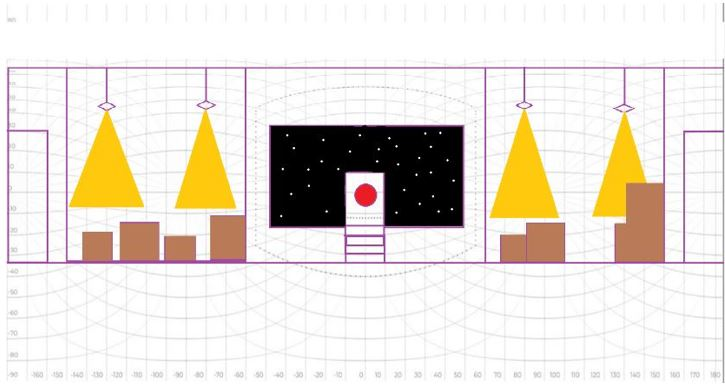

<html>
  <head>
    <script scr="https://aframe.io/releases/1.0.4/aframe.min.js%22%3E</script>
  </head>
  <body>
    <a-scene background-"transparent:true">
      <a-assets>
       
    </a-assets>
      <a-sky scr='#VR_Wireframe'></a-sky>
     <a-camera position="0 0 0" fov="90"></a-camera>
    </a-scene?
  </body>
</html>
